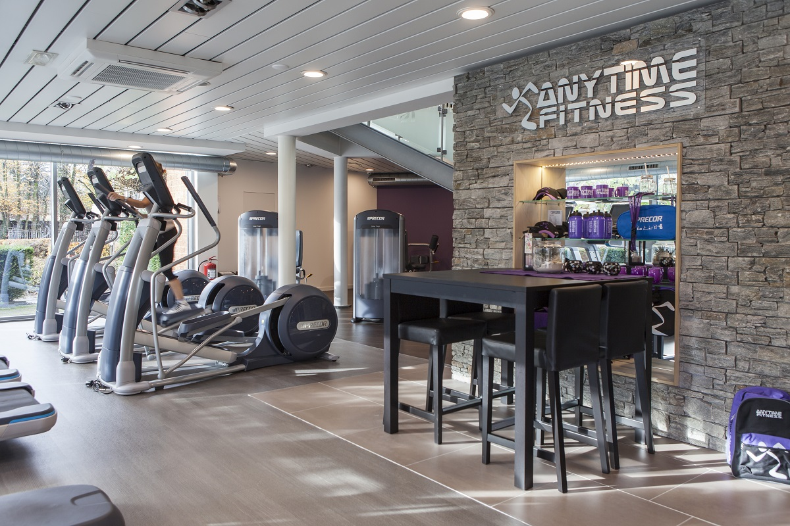

Waar ben ik de laatste tijd goed mee bezig?
- Ik let goed op in de les, ik ben ook gemotiveerd om huiswerk te maken en te leren.
- Ik ga consistent naar de sportschool.
- Ik doe veel cardio.
- Ik let op mijn voedsel.
- Ik drink alleen water.
- Ik eet geen suiker meer.
- Als ik een vraag heb ga ik gelijk naar de leraar.
- Als mijn wekker gaat ga ik gelijk uit bed en blijf ik niet liggen.
Waar ben ik de laatste tijd minder goed mee bezig?
- Gamen voordat ik naar bed ga.
- Ik ga laat naar bed.
- Ik geef de laatste tijd teveel geld uit aan eten op school.
